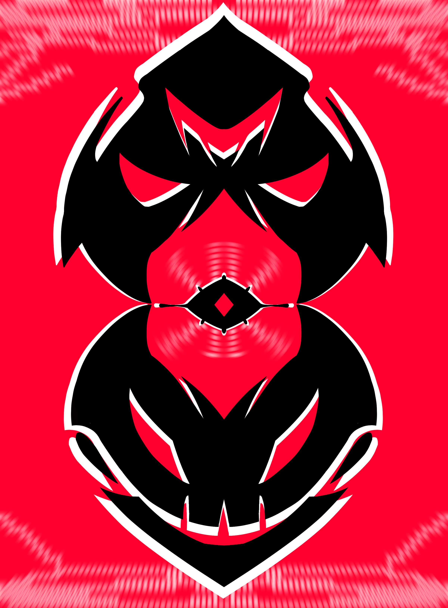

Ilustraciones
Arte original
VERIngeniero en diseño multimedia | Ilustrador y modelador 3D
Hola soy YuMo, soy un artista digital y futuro ingeniero en diseño multimedia. He sido ilustrador digital por 5 años de forma independiente. Mi gusto por los fan arts, creación de personajes y diseño de escenarios es mi mayor logro.
